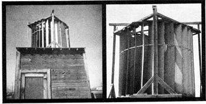

Long before the recent breakthroughs in vertical axis wind turbine design, the basic idea was conceived independently by many experimenters and worked up in several forms. One such invention has been operating continuously since 1958, and its owner was kind enough to send me the following description. --MOTHER.
In answer to an inquiry from MOTHER about my family's experiments with the vertical axis wind turbine: This machine made its first appearance, to my knowledge, about 1921 when William H. Swett (my father) built such a device and installed it on a well somewhere in the vicinity of Lovelock, Nevada. The plant was a failure due to the lack of a governor and was demolished by a strong wind.
We did nothing further with the concept until 1958, when I built a small commercial garage and decided to install a wind turbine to pump the water I needed for my operations. I designed perhaps half a dozen governors all of them either too easy to vandalize or too complex to construct, with many critical parts that tended to wear out. Finally I came up with a satisfactory solution: a hydraulic governor of sealed construction, with two bearings that run in an oil bath at all times and carry a very light load. This device limits the speed of the turbine to 475-600 rpm and has very little drag below 475 rpm.
The completed windplant has been in continuous service since its installation in 1958 and has had its bearings greased twice during the 16-year period. All that time it has pumped water for the shop, and I've used it simultaneously to charge batteries with the help of an automobile generator and alternator.
The device attracted quite a bit of attention at first, but no buyers. (There was no apparent energy crisis during 1958, you'll recall, or for several years thereafter.) Some people did express interest in using a wind turbine for irrigation or power generation but eventually they'd ask, "What do you do when the wind doesn't blow?" and I'd answer truthfully, "The machine doesn't work, of course." That ended the matter, and the prospective customer proceeded to install a diesel,gasoline, or electric-driven pump.
Recent events, however, have very materially changed the picture, and a good many people are now looking to one o: man's oldest power sources, the wind. (There's at least one recorded instance of a working windmill in 600 B.C . and how far back in history do we find mention of sailing ships?; Now we've gone the complete circle, back to the same cheap and inexhaustible resource used in ancient times.
This renewal of interest made me decide to build another vertical axis wind turbine from easily obtainable materials with a minimum of cash outlay. I finally finished an 8' X 6 rotor turbine with a total expenditure of $42.00. All the makings other than the galvanized sheet iron for the wind deflector and rotor vanes were selected from scrap and acquired at no cost.
This newer model (see the photographs) has a large vee pulley on the rotor drive shaft and a belt with a half twist to turn a small pulley on a horizontal jack shaft. A large pulley on the jack shaft to a small pulley on an alternator or generator imparts sufficient speed to generate full capacity with any wind of 10 mph up. A belt runs from the jack shaft to a reducing gear and thence to a pump jack that operates a plunger-type cylinder pump to fill an overhead tank.
I'm selling sets of plans for the turbine for $25.00, and may have manufactured parts available in the future. Instructions can be ordered from C.L. Swett, P.O. Box 657, Winnemucca, Nevada 89445.
|
 |
|
|